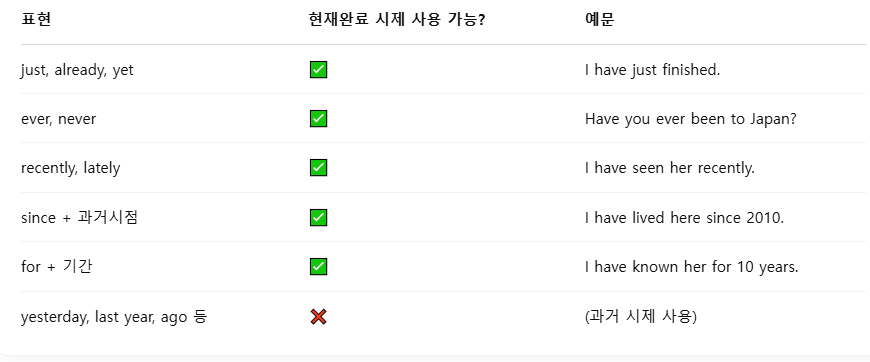
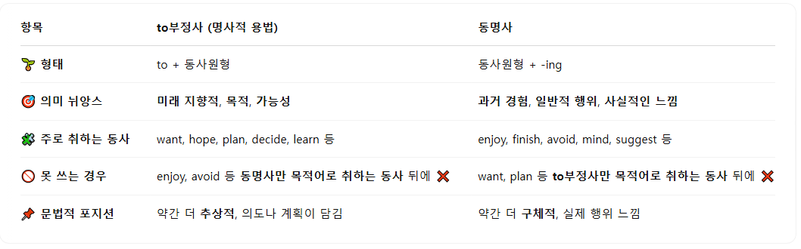
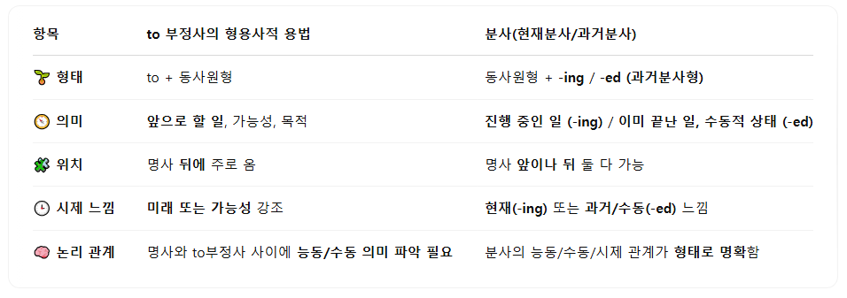
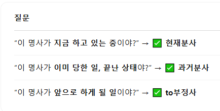

영어 문법 정리(업데이트)
part 1. 명사
토익 기출 포인트 1: 주어 자리의 주인은 명사다.
-주어 자리에는 명사, 대명사, 동명사, 명사구, 명사절, to부정사, 가주어 it + 진주어 을 쓸 수 있다.
Cats are cute.
She loves pizza.
Running is fun.
The girl in the red dress is my sister.
What he said surprised me.
To travel alone is exciting.
It is important to be honest.
토익 기출 포인트 2: 목적어 자리에도 명사를 쓴다!
이때, 동사 뒤에는 90%확률로 목적어가 위치한다. 명사, 대명사, 동명사, 명사구, 명사절, to부정사가 위치할 수 있다.
I love coffee.
She called me.
They enjoy playing soccer.
He bought a new laptop. (관 형 명 = 명사구)
I don’t know what she wants.
She hopes to meet you.
명사가 나오는 패턴 정리
1)전치사+명사
2)관사+(부사)+(형용사)+명사
3)형용사+명사
4)명사+명사
토익 기출 포인트3: 보어 자리에는 명사 또는 형용사를 쓴다! 보통 be동사와 함께 보어가 나온다.
kelly is a teacher. kelly is happy
you can call me kelly, it makes me happy
part 2. 형용사
@형용사의 역할은 단 두 개이다.
-명사 앞에서 수식 :a beautiful day
-보어로서의 역할 :She is tired.
@형용사의 생김새는 다음과 같다.
-ous, -tive, sive, -ful, al, ic
토익 기출 포인트 4: 명사 앞의 빈칸은 형용사 자리!
명사를 수식하는 것은 형용사다. 관(부)형명을 기억하자
only James can analyze the recent trends
토익 기출 포인트 5: 수량형용사의 수일치는 외우자
each,every,another = 단수명사
many,few,a number of, several = 복수명사
much,little,a little, less = 불가산 명사
all, some , most, a lot of = 복수 or 불가산 명사.
토익 기출 포인트 6: 형용사는 보어의 자리에도 들어간다.
-be동사나 make 등의 동사는 보어가 필요한데, 이때 들어갈 수도 있는 것이 형용사다. 목적어를 꾸며주거나 주어를 보충해준다.
토익 기출 포인트 7: 형용사처럼 보이지 않는 형용사가 있다. (동사 모양)
-동사에 ed나 ing가 붙어 형용사가 된 경우가 있다. 이걸 분사 형용사라고 부른다.
part 3.부사
문장의 구성성분인 주어, 서술어, 목적어, 보어, 수식어 중 수식어에서 가장 자주 쓰이는 것이 부사이다. 부사는 문장의 필수 성분은 아니지만 의미를 추가해주는 역할을 한다.
부사는 동사, 형용사, 부사, 문장 전체를 수식한다. 문제에서는 부사가 필요한 자리를 빈칸으로 두고 보기 중 부사를 넣어야 하는 문제를 많이 출제하거나 문맥상 어울리는 부사를 넣는 문제도 나온다. 따라서 부사의 형태와 역할을 이해하는 것이 중요하다.
토익 기출 포인트 8: 부사는 동사를 수식한다.
mill street bank ( finally ) has decided to extend its business hours
-부사는 보통 ly의 형태를 지니고 있는데, 동사 앞에 구멍이 뚫려서 동사를 수식해줘야 한다면 부사를 묻는 문제이다.
mill street bank has (finally) decided to extend its business hours
-근데 부사는 위치가 자유로워서 동사 덩어리 사이에 끼어들어가기도 한다. 동사 덩어리 사이에 구멍이 있다면 100% 부사라고 보면 된다.
the inspection was performed ( jointly ) by Mr brwon and safety officer.
수동태의 경우 동사 뒤에 부사가 붙는다. 동사 덩어리 사이이므로 부사
****
to-부정사, 동명사는 동사를 응용한 것이기에 수식을 받는다면 부사의 수식을 받는다.
She is interested in studying hard.
I enjoy reading quickly
토익 기출 포인트 09: 부사는 형용사, 다른 부사, 문장 전체를 수식한다.
-형용사를 꾸며줘야 하는 위치에는 부사만이 들어갈 수 있다. (관 부 형 명)
cleaning your air conditioner's filter every month is very important
토익 기출 포인트 10: 혼동하기 쉬운 부사는 해석을!
부사자리에 부사 2개가 들어가있는 경우에는 해석으로 풀어야한다. [hard/hardly]
part 4. 동사의 종류
토익 기출 포인트 11: 3형식 동사
동사에는 1형식, 2형식, 3형식, 4형식, 5형식이 있는데 90%는 3형식 동사이다. 3형식 동사는 주어+동사+목적어로 구성되며 목적어 자리에는 명사,대명사,동명사구,명사구,명사절, to부정사 들어갈 수 있는건 알지?
토익 기출 포인트 12: 5형식 동사
5형식 동사는 목적어+목적격 보어를 가진다. 보어자리에는 명사,대명사,동명사구,명사구,명사절, to부정사 + 형용사, 분사가 올 수 있다.
가끔 주어+동사+목적어+동사원형이라는 신기한 구조를 가진 문장이 존재하는데, 이는 특정 동사일 때만 해당한다.
make let help have see / hear / feel가 동사로 쓰인 경우 목적격 보어로 동사원형이 가능하다.
ex) I had the workers clean the floor.
part 5. 수일치, 태, 시제
@수일치
토익 기출 포인트 13: 수일치는 주어에 맞춘다.
쉬우니까 생략하는데, 그래도 조동사,please 뒤 동사원형은 알아두자.
@태
태는 수동태 능동태가 있는데, 맨 뒤에 be pp가 있으면 수동이고 없으면 능동이다.
was playing : 과거진행/능동
are being watered : 현재진행/수동
have been colored : 현재완료/수동
토익 기출 포인트14: 수동태를 써야하는 지 능동태를 써야하는 지는 해석으로 푼다!
@시제
토익 기출 포인트15: 현재시제와 과거시제
현재나 현재완료 시제는 완전한 과거를 의미하는 표현과 함께 쓰이지 않는다. 과거를 의미하는 내용이 나오면 과거시제를 쓴다.

recently, lately, for~ 은 현재완료 have pp와 함께 쓰인다.
previoulsly는 과거시제와 함께 쓰인다.
*****동사 총정리*****
동사 문제는 소거법으로 푸는데, 수-태-시제 순으로 소거한다. 수일치를 위해 주어를 보고, 태를 따지기 위해 목적어 유무를 보거나 해석을 한다. 이후 시제를 따지기 위해 시제 단서를 찾는다. 가짜 동사인 동명사, 분사, to-v는 제거한다.
part 6.전치사
토익 기출 포인트16: 전치사 뒤에는 목적어가 필요하다.
수식을 할 수 있는 단어 중에는 품사가 전치사, 접속사인 단어들이 있다. 전치사는 명사의 앞에 쓰이는 것으로, 명사, 대명사, 동명사, 명사구, 명사절이 올 수 있으며 전치사+to 부정사, 전치사+that 절은 불가능하다.
예시) 전치사+명사
전치사+관사+형용사+명사
전치사+동명사구
전치사+명사+수식어
토익 기출 포인트17: 전치사의 종류
at, on, in, after, before, untill, by, during, for, to, from, through, within, without, between, among, since(접속사도 됨), despite, in spite of // because of=due to=owing to=on account of, following, as, of로 끝나면 전치사
토익 기출 포인트18: 전치사 vs 접속사
똑같은 의미를 가진 단어가 보기로 제시된 경우 전치사와 접속사를 구분하는 문제일 가능성이 높다.
for, during vs while
by, until vs until
because of, due to vs since, as, because
despite, in spite of vs although, though
part 7.접속사
접속사는 크게 등위접속사, 상관접속사, 부사절 명사절 접속사로 구분된다.
중요 토익 기출 포인트: 접속사는 문장을 1개로 이어주는 역할을 한다!
토익 기출 포인트19: 등위접속사는 문두에 쓰지 못한다.
등위접속사는 같은 구조의 문장,단어, 절을 연결한다. 종류로는 and, but, or, so, rather than 등이 있다.
토익 기출 포인트20: 상관접속사
both A and B, not only a but also b 등이 있으며 숙어라고 볼 수 있다. 그냥 등위 접속사의 일종이다.
토익 기출 포인트21: 부사절접속사는 문장 2개를 하나로 이어준다.
문장과 문장을 이어주는 역할을 하는 접속사이다. ,가 찍힌 문장 2개가 붙은 경우 등에 쓴다.
종류로는 once, after, when, as, until, as soon as, before, while, since, provided=if, as long as , in case, because, since, as, now that, though, so 형/부 that 등이 있다.
예시) I didn’t go out because it was raining.
토익 기출 포인트22: 시간과 조건의 부사절접속사에서는 현재시제만을 쓴다.
once, as soon as, after, when, while, before, untill, since + 현재시제
if, as long as, in case + 현재시제
토익 기출 포인트23: 명사절 접속사의 종류
명사절을 만들어주는 접속사로, that, if, whether가 있다.
I know that she is right
That he passed the exam surprised me.
토익 기출 포인트24: 전치사 뒤 목적어 자리에 명사절 접속사 that은 불가능하다.
토익 기출 포인트25: whether은 어디든 명사자리에는 가능하다. 또한 부사절 접속사로서도 기능한다.
I don’t know whether she likes me. (목적어)
It depends on whether they agree. (전치사의 목적어)
Whether you like it or not, you have to go. (부사절로 쓰임, ~인지 아닌지에 상관없이로 해석된다.)
토익 기출 포인트26: if는 오직 타동사의 목적어 자리에만 쓸 수 있다. 또한 문두에 쓰일 경우 부사절 접속사로 쓰인다.
I wonder if he knows (명사절 접속사)
If you study hard, you'll pass(부사절 접속사)
토익 기출 포인트 27:형용사절 접속사 who which that
절을 이끄는데, 그것이 수식하는 역할을 할 경우 형용사절이라고 하며 형용사절임을 나타내줄 수 있는 접속사가 존재함
who, which, whom, that 등이 있다. 보통 사람이나 사물을 수식하므로, 수식 대상을 잘 보면 알 수 있다.
토익 기출 포인트 28: 접속부사는 문장을 둘로 나눈 상태에서 서로 연결시켜준다.
부사 중 문장과 문장을 이어주는 부사가 존재한다. 부사절 접속사랑 접속부사랑 기능은 비슷하지만, 부사절 접속사는 하나의 문장을 만드는 연결어이고 접속부사는 문장을 둘로 나눈 상태에서 부사로 연결한다는 차이가 있다.
Because it was raining, we stayed home. (부사절접속사)
It was raining. Therefore, we stayed home.(접속 부사)
once, after, when, as, because 등등은 부사절 접속사이고
접속부사에는 however, on the contrary, on the other hand, conversely, nevertheless, otherwise, even so, notwithstanding, therefore, as a result, thus, hence, accordingly, consequently, for example, in addition이 존재한다.
part 8. to 부정사
토익 기출 포인트 29:명사적 용법
to부정사의 명사적 용법은 주어, 목적어, 보어 자리에 올 수 있는데, 이 경우 to부정사를 목적어로 취하는 동사가 존재한다. want to, hope to, need to refuse to feel to learn to 등이 존재한다.
또한 to 부정사를 목적격 보어로 취하는 동사들도 존재한다.
remind 목적어 to 부정사, enable 목적어 to 부정사, invite 목적어 to 부정사 등이 존재한다.

*동명사와 to 부정사의 명사적용법은 그냥 비슷한데, 동사에 따라 못쓰는 경우가 있다는 차이가 있다.
토익 기출 포인트 30:형용사적 용법

명사를 수식할 때 to 부정사를 쓸 수 있다. 또한 명사를 수식할 때 분사를 쓸 수도 있다.
예시) I need a book to read, a student reading quietly, and a letter written in French.
수식할 때 to v를 쓸 지 분사를 쓸 지 판단기준은 다음과 같다.

토익 기출 포인트 31:부사적 용법
[동사/형용사/문장 전체] + to부정사 형태로 등장하여 추가적인 내용을 설명해줄 수 있다. 이 경우 보통 ~하기 위해서 라는 뜻으로 해석된다.
part 9. 동명사
토익 기출 포인트 32:목적어로 쓰일 때 to부정사 vs 동명사
동명사는 명사이므로 주어,목적어,보어 자리에 들어갈 수 있다. 이때 목적어 자리에 들어갈 경우 동명사를 목적어로 취하는 동사인 enjoy, mind, finish, avoid, consider, deny, suggest, recommend, keep, give up, stop, admit 뒤에 쓰인다.
또한 전치사 뒤에 to-v는 쓰지 않고 동명사를 쓴다.
part 10. 분사
분사는 형용사이므로 명사를 수식한다. 또는 보어자리에도 쓸 수 있긴하다.
명사를 수식할 때 현재분사/과거분사가 있는데 보통 둘 중 무엇으로 명사를 수식할 지를 물어본다.
구분법
1)명사 앞에서 수식하는 경우: 해석상으로 푼다
2)명사 뒤에서 수식하는 경우: 공식으로 푼다
=>분사 뒤에 딸린 애가 명사면 ing, 전치사구면 pp (수동은 목적어 쓸 수 x)
*만약 자동사라면 반드시 현재분사가 정답!
rising, remaining, growing, existing, specializing 등